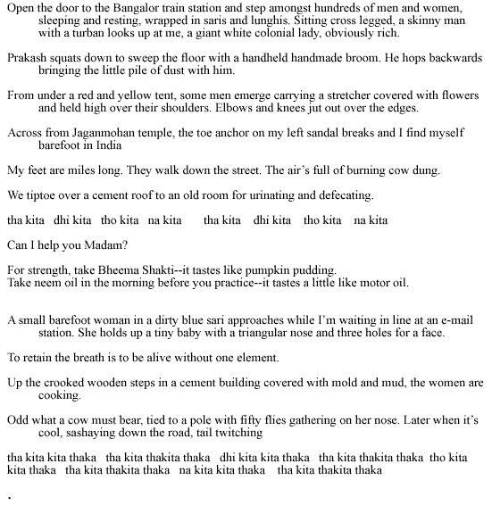
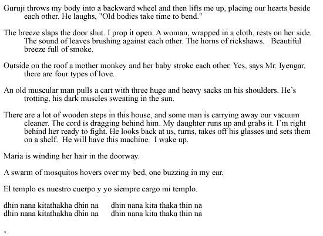
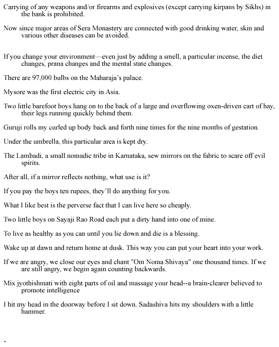
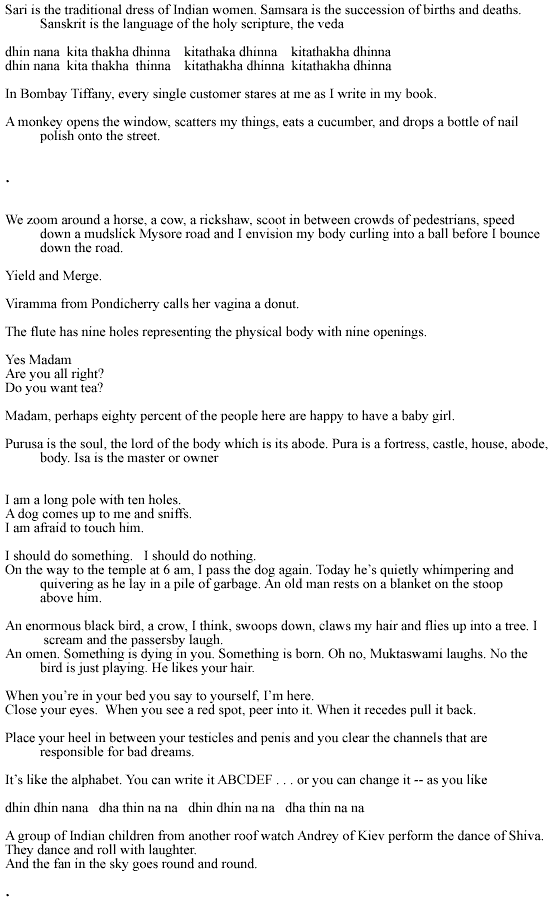
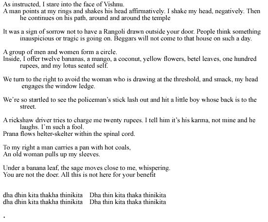

Barbara Henning
WORKING NOTE by Barbara Henning
"Tha Kita Thaka" was composed from material I collected in a journal while I was in India last summer. When I stepped off the plane in Bangalore I was turned up side down and around. Dizzy. I discovered that going in a circle -- as I often do wherever I am -- is in fact a sacred activity, unpatentable and continual.
THA
KITA THAKA
or
Postcards from India

   
BIO: Barbara Henning is the author of Smoking in the Twilight Bar and Love Makes Thinking Dark (United Artists). Her pamphlets and artist book collaborations include Me and My Dog (Poetry New York), The Passion of Signs (Leave Books), Words and Pictures, How to Read and Write in the Dark and In Between (forthcoming from Spectacular Disease). Her work has recently been published in The World, Poetry International, Paris Review, Lingo, Talisman and Fiction International.